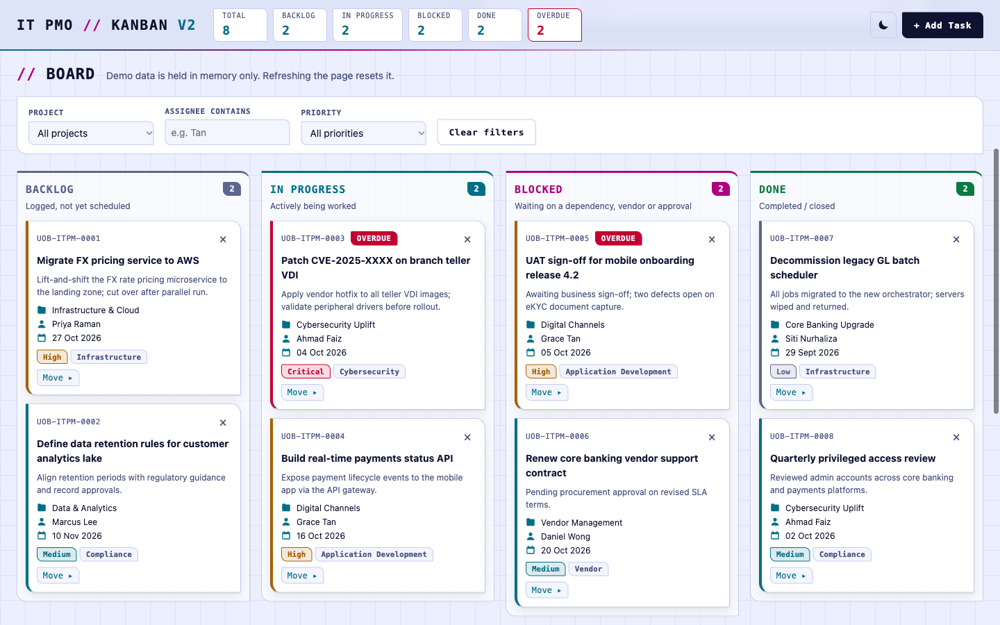
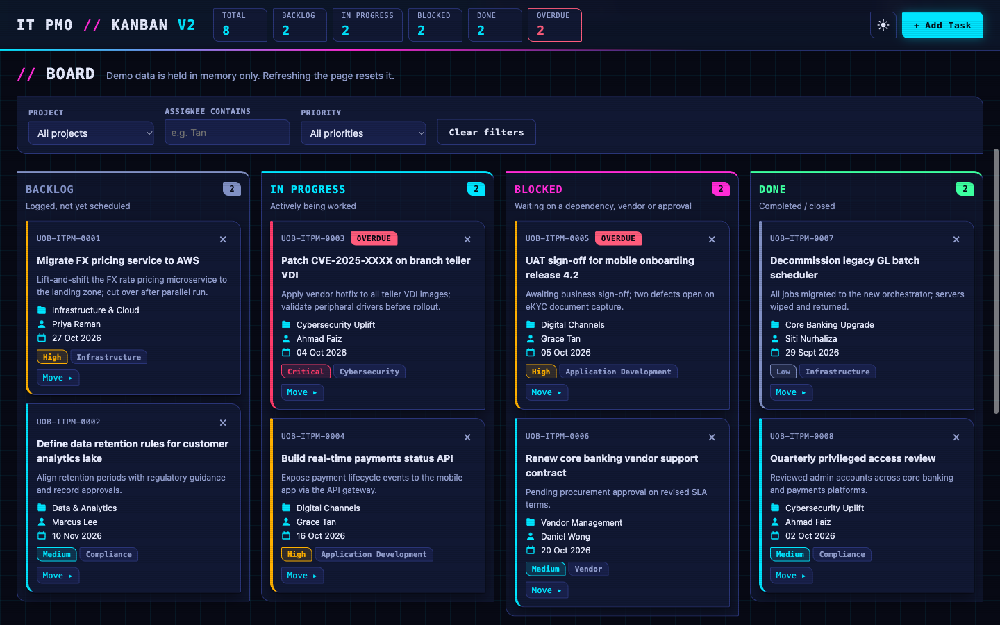
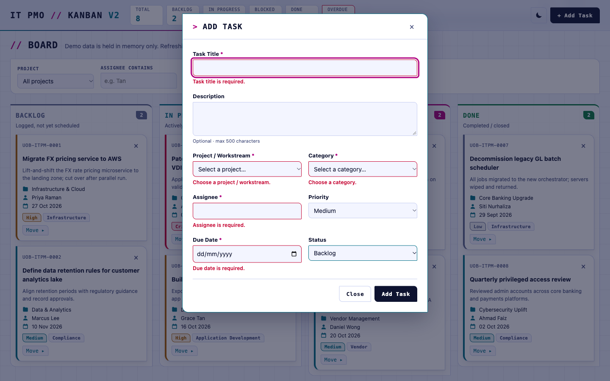
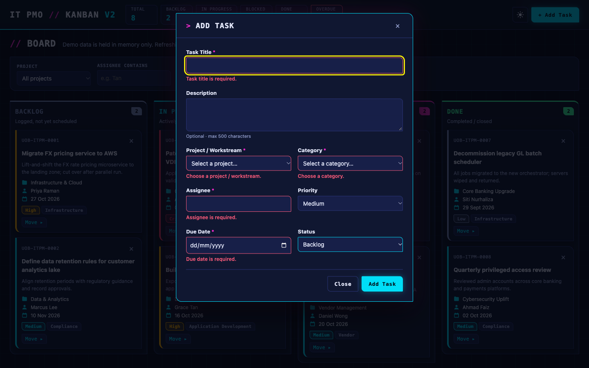

Run the IT PMO from one grid.
Four columns, eight demo tasks and nothing to install. Drag a card, filter by project or priority, and add a task of your own.
Board
Demo data is held in memory only. Refreshing the page resets it.
Screens
Captured from the running app in both themes. The page shows the one that matches your current theme.



